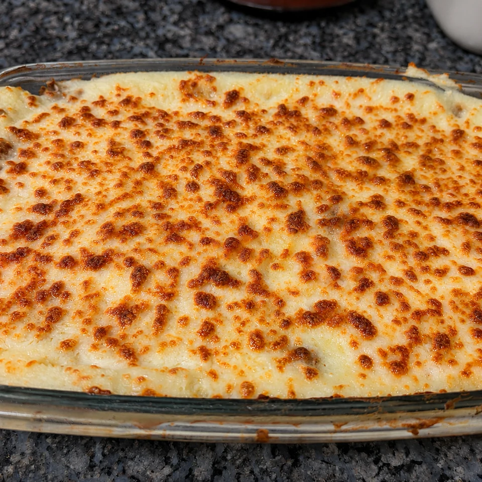

Pastel de carne con puré de patata y mozzarella gratinada
Pastel de carne picada mixta con cebolla y tomate, entre capas de puré de patata y terminado con mozzarella gratinada.
- Tiempo total
- 45 min aprox.
- Preparación
- 20 min
- Cocción
- 25 min aprox.
- Raciones
- 4–6 raciones
- Dificultad
- Fácil

Ingredientes
4–6 raciones
Marca lo que ya tienes.
Dorar bien la carne con la cebolla aporta sabor al relleno. Deja reposar unos minutos antes de cortar y servir.
Preparación
- Pochar la cebolla y el ajo. Pica la cebolla y los dos dientes de ajo. Sofríelos lentamente con aceite de oliva hasta que la cebolla esté bien pochada.
- Dorar la carne. Añade los 500 g de carne picada mixta. Cocina removiendo y desmenuzando la carne hasta que se dore bien con la cebolla.
- Incorporar el tomate. Agrega tomate frito natural al gusto, una pizca de pimentón, sal y pimienta. Mezcla para integrar los sabores.
- Preparar el puré. Prepara la bolsa de puré Maggi siguiendo las proporciones de líquido y las indicaciones del envase.
- Montar el pastel. Extiende una base de puré en una fuente de horno, espolvorea un poco de queso rallado, distribuye toda la carne y cubre con otra capa de puré.
- Gratinar con mozzarella. Reparte la mozzarella rallada por encima y gratina hasta que se funda y quede bien dorada. Vigila el horno, porque el tiempo varía.
UN POCO DE OFICIO
Para que te salgan bien
Consejos
- Dorar bien la carne con la cebolla aporta sabor al relleno. Deja reposar unos minutos antes de cortar y servir.
Recomendaciones
El tomate y el queso se añaden al gusto. El puré se prepara según su envase para mantener la proporción de líquido adecuada.
Cómo servir y presentar
Lleva la fuente a la mesa recién gratinada y deja reposar unos minutos para que las capas se asienten.
MÁS SOBRE ESTA RECETA
↑ Volver a la recetaPastel de carne y puré: una comida fácil para compartir
Este pastel combina un relleno jugoso de carne picada con la suavidad del puré y una capa final de mozzarella gratinada. Es una buena opción cuando se busca un plato completo que se pueda preparar en fuente y servir por raciones.
El secreto está en dorar bien la carne
Sofreír la cebolla y el ajo antes de incorporar la carne ayuda a construir el sabor del relleno. Desmenuza la carne mientras se cocina para repartirla de forma uniforme.
Cómo montar capas que no se mezclen
Extiende primero una base de puré, después el relleno y termina con otra capa de puré. El queso de la capa interior es opcional; la mozzarella se reserva para el gratinado.
Cuándo sacar el pastel del horno
Aquí no se fija un tiempo de gratinado: lo importante es que la mozzarella esté fundida y bien dorada. Deja reposar la fuente unos minutos antes de repartir.
Opiniones sobre esta receta
Consultando valoraciones…